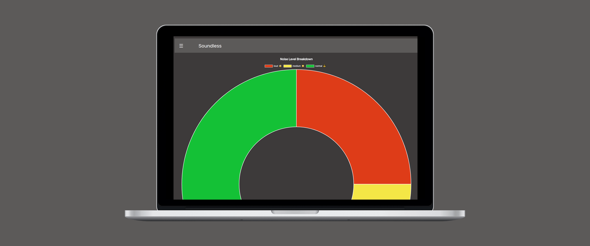
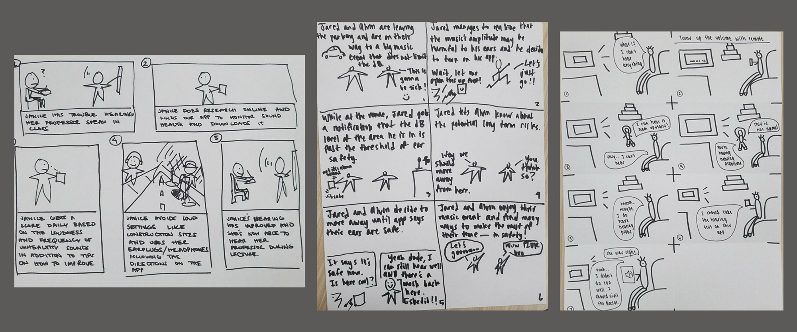
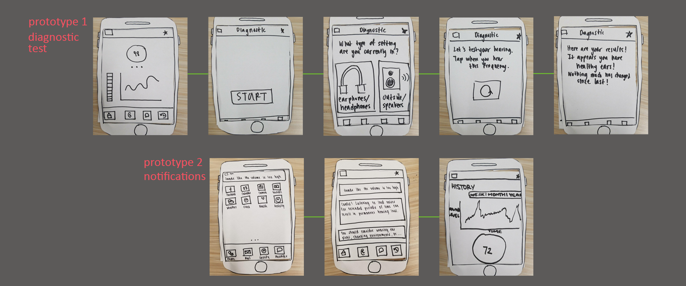
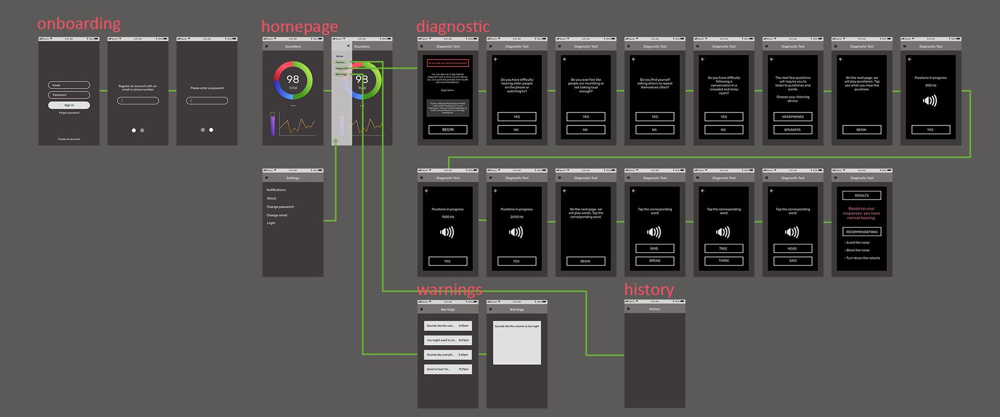
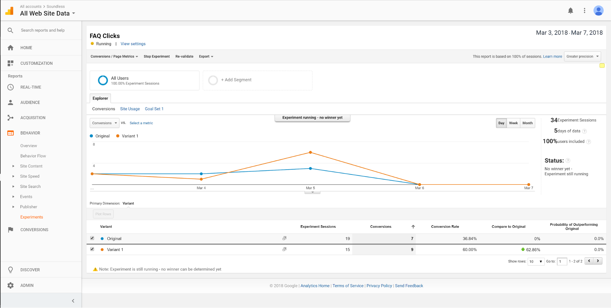

<!DOCTYPE html>
<html lang="en">
  <head>
    <meta charset="UTF-8" />
    <meta name="viewport" content="initial-scale=1" />
    <meta http-equiv="X-UA-Compatible" content="ie=edge" />
    <meta name="author" content="Ryan Manalastas" />
    <meta
      name="description"
      content="Designer + HCI student that loves conducting research and gathering insights to inform and translate them into effective user experiences."
    />
    <meta
      name="keywords"
      content="Ryan Manalastas, visual design, interaction design, ux design, product design, ux research, user research, front-end development"
    />
    <meta property="og:type" content="website" />
    <meta
      property="og:description"
      content="Designer + HCI student that loves conducting research and gathering insights to inform and translate them into effective user experiences."
    />

    <link rel="preconnect" href="https://fonts.googleapis.com/" crossorigin />
    <link
      href="https://fonts.googleapis.com/css?family=IBM+Plex+Mono|IBM+Plex+Sans&display=swap"
      rel="stylesheet"
    />
    <script src="https://kit.fontawesome.com/2b3a191065.js"></script>
    <link rel="stylesheet" href="css/main.css" />
    <link rel="stylesheet" href="css/soundless.css" />
    <title>Ryan Manalastas</title>
  </head>
</html>

<body class="bg-white">
  <button id="back-to-top">
    Back to Top<i class="fas fa-arrow-circle-up"></i>
  </button>

  <div class="container-index">
    <header>
      <h1 class="logo"><a href="index.html">Ryan Manalastas</a></h1>
    </header>
  </div>

  <article class="container-project">
    
    <div class="top">
      <div class="left-section title-top">
        <h2 class="title">Soundless</h2>
        <div>
          <a class="view-button" href="https://soundless.herokuapp.com/"
            >See desktop prototype</a
          >
        </div>
      </div>
      <div class="summary">
        <p>
          If you know me, you know I'm a big fan of music culture and like going
          to concerts. So I was especially excited to have pitched the idea to
          and worked with a team who was interested in conceptualizing an
          application that evaluates your ear health via diagnostics and offers
          real-time alerts of dangerous sound levels around you.
        </p>
        <p>
          Through this project, I learned about how people consume music or
          generally deal with harmful noise around them and how design
          methodology could find ways toward a solution.
        </p>
      </div>
      <div class="break-left">
        <p><span class="highlight">Roles:</span> Researcher, visual designer</p>
        <p>
          <span class="highlight">Skills:</span> Needfinding, user interviews,
          storyboarding, wireframing, rapid prototyping, visual design, web
          design
        </p>
        <p>
          <span class="highlight">Deliverables:</span> Storyboards, wireframes,
          prototypes, Github repo
        </p>
      </div>
      <div class="break-right">
        <p><span class="highlight">Date:</span> Jan - Mar 2018 (10 weeks)</p>
        <p>
          <span class="highlight">Teammates:</span> Vivian Ta, Alexander Chen
        </p>
      </div>
    </div>

    <div class="brief-section">
      <div class="left-section brief-title">
        <h2 class="title section-title">Design Brief</h2>
      </div>
      <div class="brief-text-1">
        <p>
          As we grow older, our hearing abilities naturally worsen and the
          spectrum of frequencies we perceive begin to narrow. Humans naturally
          flinch and try to protect their ears in reaction to loud and startling
          noises. However, extended exposure to loud but tolerable noises in
          settings or recreational activities such as practicing at a shooting
          range, riding a motorcycle, or listening to music at a concert can
          lead to hearing loss.
        </p>
      </div>
      <div class="brief-text-2">
        <p>
          By providing diagnostics based on auditory input from your
          surroundings, Soundless enables people to determine whether
          surrounding noises are detrimental or not, along with getting advice
          on how to further prevent noise induced hearing loss.
        </p>
      </div>
    </div>

    <div class="needfinding-section">
      <div class="left-section needfinding-title">
        <h2 class="title section-title">Needfinding</h2>
      </div>
      <div class="needfinding-text">
        <p>
          My team members and I conducted 3 interviews each. Most of the people
          we interviewed were of college age and fulfilled at least one of two
          criteria: they were either concert goers or listened to music through
          some device. I also was able to observe a friend work in a music
          studio. I wanted to focus on how people used and needed sound in their
          environments to see how I could use sound feedback to better their
          experiences. Upon seeing a pattern in how people react to potentially
          dangerous sound levels in their environment, I decided to focus on
          opportunities on opportunities regarding ear health habits.
        </p>
        <p>
          Through the questions we asked, we wanted to assess type and intensity
          of their respective loud environment and observed how they interacted
          with it to uncover any pain points.
        </p>
      </div>
      <div class="needfinding-action">
        <p>
          Some interesting insights that we ended up prioritizing were that
          people in loud environments:
        </p>
        <ul>
          <li>
            do not know the environment they are in is potentially harmful to
            the ears. Observing my friend producing music, he would get
            distracted by another task like talking to someone or going on his
            phone/laptop and would forget to turn down the music.
          </li>
          <li>
            are aware the space they are in is relatively loud but tolerate or
            prefer the volume level because they get used to it after prolonged
            exposure. Another interviewee attested to preferring the sound
            louder since he felt he was better able to hear all parts of the
            song and tolerated higher volumes during music listening.
          </li>
        </ul>
      </div>
    </div>

    <div class="ideation-section">
      <div class="left-section ideation-title">
        <h2 class="title section-title">Ideation</h2>
      </div>
      <div class="ideation-text">
        <p>
          To guide our design solution more, we reframed the aforementioned
          insights into these statements:
        </p>
        <ul>
          <li>
            How can we inform users that are unaware of dangerous sound levels
            to prevent damage to their ears?
          </li>
          <li>
            How can we convince users that are aware of but tolerate dangerous
            sound levels to want to prevent damage to their ears?
          </li>
        </ul>
      </div>
    </div>

    <div class="storyboard-section">
      <div class="left-section storyboard-title">
        <h2 class="title section-title">Storyboarding</h2>
        <a href="https://projects.invisionapp.com/boards/AZ3UE7O8WEV/"
          >See storyboards here!</a
        >
      </div>
      <div class="storyboard-text">
        <p>
          Next, we made storyboards using the data from needfinding and our How
          Can We statements from ideation. The storyboards were to explore these
          3 potential solutions:
        </p>
        <ul>
          <li>
            receiving a daily score on your approximate sound health and steps
            to improve
          </li>
          <li>
            notifications when sound levels exceed recommended amount or
            duration
          </li>
          <li>
            a hearing diagnostic to gauge current ear health by playing playing
            different frequencies
          </li>
        </ul>
      </div>
    </div>
    

    <div class="paper-section">
      <div class="left-section paper-title">
        <h2 class="title section-title">Rapid prototyping</h2>
        <a href="https://projects.invisionapp.com/boards/AZ3UE7O8WEV/"
          >See paper prototypes here!</a
        >
      </div>
      <div class="paper-text-1">
        <p>
          We created two paper prototypes and had participants go through use
          cases and assess whether they could understand the app's preventative
          purpose. One prototype demonstrated the app's potential notifications
          that it would give a user when sounds were detrimental to one's ear
          health. The other demonstrated a diagnostic feature that assesses the
          user's ear health by playing frequencies and asking whether they could
          hear it or not.
        </p>
      </div>
      <div class="paper-text-2">
        <p>
          In addition to addressing minor usability issues, we received comments
          saying that the notification that one receives in a dangerously loud
          environment could be paired. Thus, we planned to keep both features.
        </p>
      </div>
    </div>
    

    <div class="revisit-section">
      <div class="left-section revisit-title">
        <h2 class="title section-title">
          Revisiting the brief + redesigning for sound feedback
        </h2>
      </div>
      <div class="revisit-text-1">
        <p>
          Upon revisiting the design brief, we realized we may not be entirely
          fulfilling the sound feedback part of our studio. Our prototypes tried
          to fulfill this by having a diagnostic that requires listening to
          frequencies and notifications that play when sounds are too loud.
        </p>
        <p>
          Since we were trying to adhere to the constraint of our product using
          sound feedback in its core functions, we planned for the app to have a
          histogram that records sound levels in real time.
        </p>
      </div>
    </div>

    <div class="wireframe-section">
      <div class="left-section wireframe-title">
        <h2 class="title section-title">
          Wireframing
        </h2>
      </div>
      <div class="wireframe-text">
        <p>
          We then made wireframes to visualize the flow of the app. We wanted to
          outline our diagnostic and notifications features.
        </p>
      </div>
    </div>
    

    <div class="html-section">
      <div class="left-section html-title">
        <h2 class="title section-title">
          HTML prototype
        </h2>
      </div>
      <div class="html-text">
        <p>
          With our wireframes, we spent roughly 6 weeks implementing and testing
          our prototype. I was able to contribute to the logic for the
          diagnostic, while another team member handled the heavy parts of the
          implementation that required working with a sound recording API.
        </p>
      </div>
    </div>

    <div class="testing-section">
      <div class="left-section testing-title">
        <h2 class="title section-title">
          User testing
        </h2>
        <a href="https://a7-soundless.herokuapp.com/"
          >See first (very rough) prototype here!</a
        >
      </div>
      <div class="initial-sub">
        <h3 class="sub-title">Initial user tests</h3>
        <p>
          Our app aimed to distinguish itself by having functionalities of
          similar sound apps by merging together their functionalities of
          diagnostic tests, decibel sensors, and contextual recommendations.
          Because this concept is a little ambitious in what it promises, we
          wanted to make sure that users:
        </p>
        <ul>
          <li>
            had a overall, baseline understanding of the app upon looking at it:
            Are there any problems users have when identifying the purpose of
            the app overall and its respective features?
          </li>
          <li>
            understand what the various graph elements on the home page
            represent: Are there any problems users have identifying what the
            various graphs on the homepage represent?
          </li>
          <li>
            do not face significant confusion or inconvenience when performing
            the diagnostic test: Are there any problems users have in doing the
            diagnostic test?
          </li>
        </ul>

        <p>
          Patterns in user testing that we noticed involved issues in visibility
          of system status and match between system and real world phrase
          conventions. Some examples of these issues were:
        </p>
        <ul>
          <li>
            the wording of the page titles plus lack of explanations made
            understanding some pages confusing, e.g. a user felt using "Data" as
            a page title indicated past records and did not realize he was being
            recorded real time and felt that it should be moved to a different
            page
          </li>
          <li>
            for another user, the lack of descriptions for the "Warnings" page
            and pie chart on the Data page were also not well understood
          </li>
        </ul>

        <p>
          Overall, users seemed to be pleased with the functionality of the
          sound graph being live recorded and updated, but in turn did not spend
          as much time dwelling on pages that had poor wording.
        </p>

        <p>
          We also had issues in testing while trying to simulate notifications
          that would pop up when a dangerous noise level was detected.
          Essentially, trying to simulate this backfired in that it interrupted
          the flow of testing when a user had to close and attend to a
          notification.
        </p>

        <p>
          In response to the aforementioned feedback, changes we made involved:
        </p>
        <ul>
          <li>
            changed the "Warnings" page to "Notifications" and added timestamps
            and differing notifications to better distinguish them from each
            other
          </li>
          <li>
            revised the "Advice" page to "FAQ" to "Forum" to better reflect its
            purpose of ear health/product discussion and added a
            Recommend/upvote button in hopes that social influence would
            increase overall product use
          </li>
          <li>
            eventually changed the Homepage to contain the Noise Level Breakdown
            and History of Sound Level graphs. Before, the homepage contained
            the navigation and had the Data page separate. This was for
            acceleration of use and since it's a core functionality.
          </li>
        </ul>

        <a href="https://a7-soundless.herokuapp.com/"
          >See first (very rough) prototype here!</a
        >
      </div>

      <div class="ab-sub">
        <h3 class="sub-title">A/B testing</h3>
        <p>
          To validate the change mentioned above about the addition of a
          Recommend button on the Forum page, we conducted A/B testing with
          Google Analytics fand determined whether this was statistically
          significant. The original in the picture is our Forum page without a
          Recommend/social button, and the variant in the picture refers to the
          page with this feature.
        </p>
        <p>
          With df = 1 and p < 0.05, our statistic (1.74 < 3.84) does not make it
          to the .05 level. With a chi squared value of 1.74, we can only fail
          to reject the null hypothesis. This implies that the addition of the
          button increased conversion rate and overall activity on the page.
        </p>
        <p>
          See the first design versus the new design here:
          <a href="https://a9-soundless.herokuapp.com/historyalt.handlebars"
            >old</a
          >
          and
          <a href="https://a9-soundless.herokuapp.com/history.handlebars"
            >new</a
          >
        </p>
      </div>
    </div>
    
    
    

    <div class="final-section">
      <div class="left-section final-title">
        <h2 class="title section-title">
          Final design
        </h2>
        <a href="https://soundless.herokuapp.com/"
          >See our final prototype here!</a
        >
      </div>

      <div class="final-text">
        <p>
          After all the testing and changes, our team presented our work,
          poster, and pitch to the rest of the ~150 students and professional
          attendees. Attendees voted on accolades that were awarded teams and we
          (surprisingly)
          <span class="highlight">received "Best UI/Visual Design"</span> out of
          the other students!
        </p>
        <p>
          Judges in attendance: Jon Kies (Qualcomm), Arlene Harris (DYNA, LLC.),
          Gad Shaanan (YOFiMeter), Chuck Pelly (Intersection-Inc.), Magaly Drant
          (ServiceNow Inc.), Jamie Lee (Viasat), Tracie Davee (Viasat)
        </p>
      </div>
    </div>

    <div class="reflection-section">
      <div class="left-section reflection-title">
        <h2 class="title section-title">
          Reflection
        </h2>
      </div>
      <div class="reflection-text">
        <p>
          Looking back and writing about this project a year later, I definitely
          do notice and acknowledge this project's flaws.
        </p>
        <p>
          One thing I'd want to do if I were to revisit the project would be to
          work more on branding better. I remember I had not taken any classes
          involving visual communication. Thus, I would want more time to think
          about branding and colors and how that fits into the purpose of this
          product, e.g. light green colors for growth instead of the harsh black
          and bright red/green we had utilized.
        </p>
        <p>
          I also felt our project tried onloading too many features and that the
          "studio" we were in affected this. Our studio's topic was supposed to
          focus on sound feedback, and this constraint and our advisor had us
          design features that felt they were mostly for the sake of having
          sound feedback integrated.
        </p>
        <p>
          I also wished that I was better at frickin' coding!! Due to the
          discrepancy in skill between mine and another team member's
          implementation skills, I only contributed to the logic for the
          diagnostic page while one team member did most of the heavy lifting
          implementation-wise. So I wished I was more proactive and more learned
          in front-end so that I could have alleviated some of the stress my
          team experienced.
        </p>
        <p>
          And the final most important takeaway from most of my projects is that
          I wished there was more thorough documentation on mine and my team's
          part. I was young and naive and should've taken structured breaks to
          document the process as it was ongoing so that being able to piece
          together all this data would've been easier.
        </p>
        <p>
          Regardless, this was a really enriching experience and a significant
          project because this was one of my first projects where I had to use
          the human-centered design process in a web design setting. I also
          remember this being a pretty stressful and busy quarter so being able
          to pull all this off was (for better or for worse...) memorable.
        </p>
      </div>
    </div>
  </article>

  <footer>
    <span class="left">
      <a href="mailto:rmarcmanalastas@gmail.com"
        ><i class="far fa-envelope"></i> Email</a
      >
      —
      <a href="https://www.linkedin.com/in/ryan-manalastas-41597313a/"
        ><i class="fab fa-linkedin-in"></i> LinkedIn</a
      >
    </span>
    <span class="right">
      Made with <i class="far fa-heart"></i> Ryan &copy2019
    </span>
  </footer>

  <script src="js/main.js"></script>
</body>
